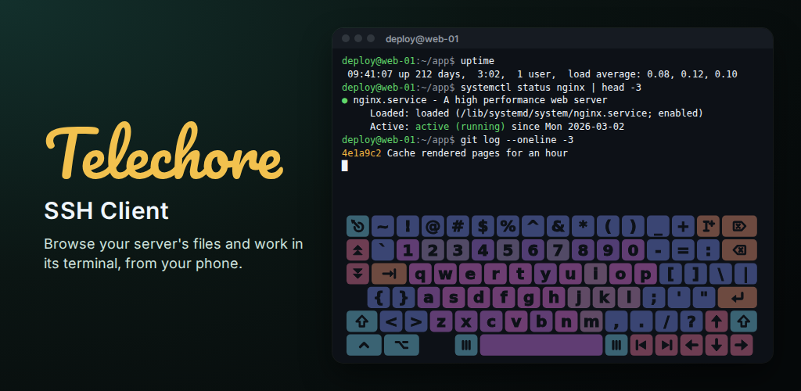
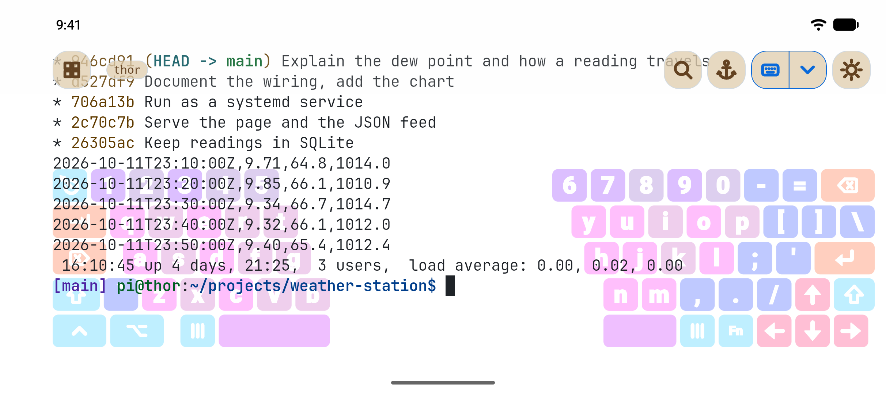
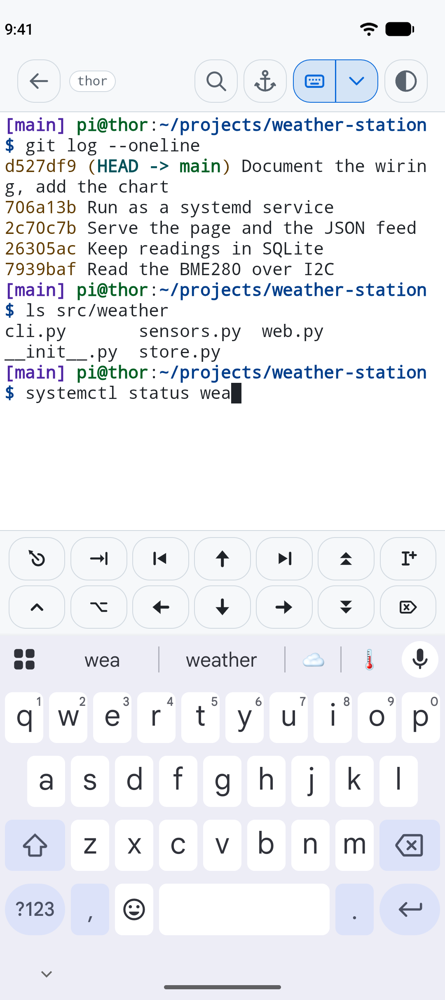
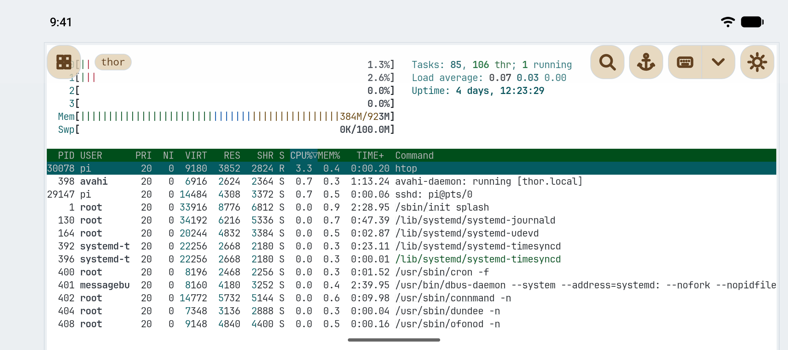
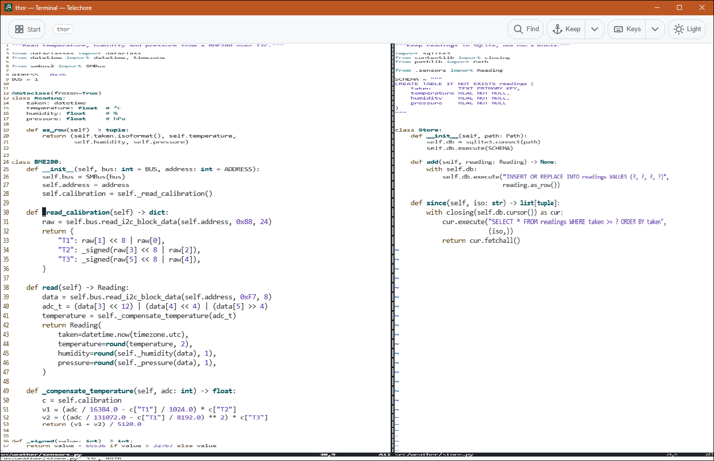
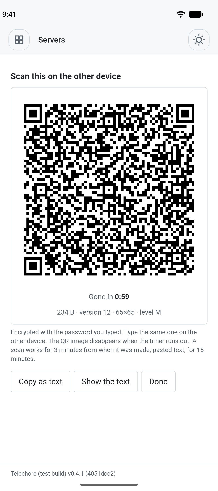
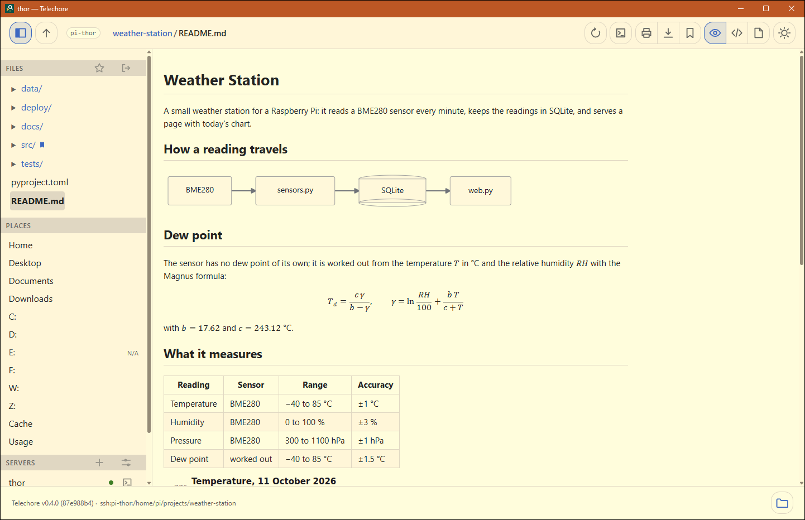
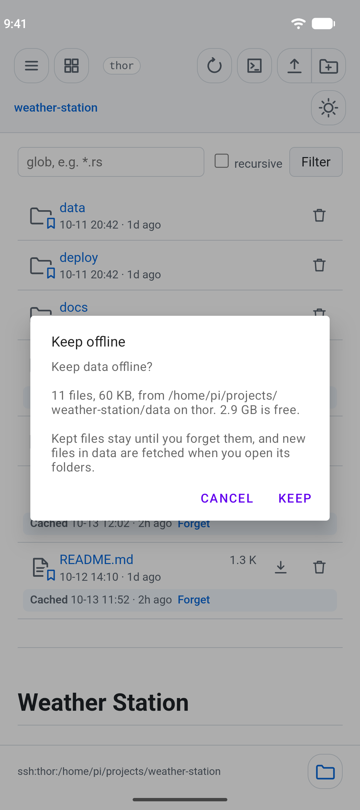
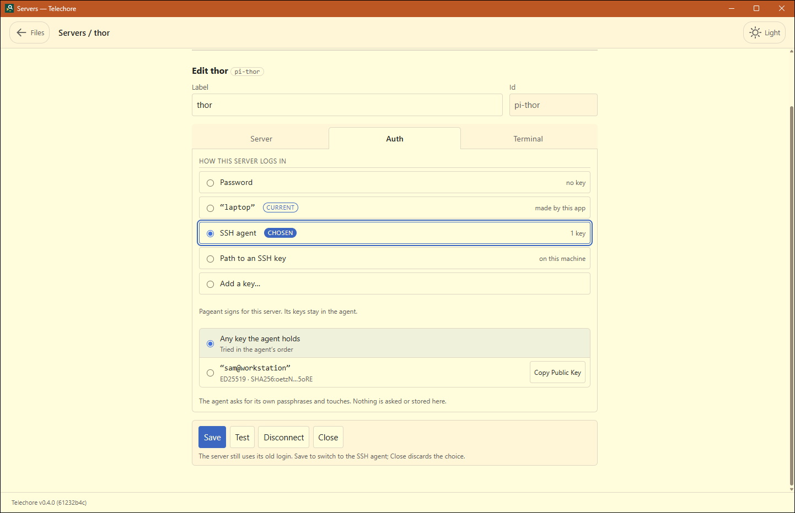

Telechore
An SSH client for a phone or a desktop: browse a server's files as a tree, with the selected file beside it, and work in its terminal.
Telechore shows a folder as a tree, on this device or on a server over SSH, and renders what you select: source with highlighting, Markdown, images, PDF. Its terminal uses the same connection, so it needs no second login.

Get Telechore
Download goes to the releases on GitHub, which carry
Telechore for Linux — a .deb, an .rpm, and the
plain binary — beside treesight. A copy from a store
is the free edition: two servers, and two terminals kept running, on Google
Play, four of each on the Microsoft Store; on both, Pro lifts them for one
payment with no subscription. The latest release is 0.5.0, from 24 October 2026;
What's new in each version.
What it does
A full keyboard, in color
Turn the phone on its side. Laptop keys, or Coder keys with every symbol on a key of its own.

Esc, Tab, Ctrl, Alt and the arrows
The keys a phone keyboard is missing, above it or floating.

Fix the size, then zoom, pan or see it whole
Full-screen programs keep their layout while the keyboard comes and goes.

See a big terminal whole
The part you work in at full size, the rest squeezed toward the edges.

Copy server settings
By QR code, to another phone or computer, with no account.

Read Markdown, formatted
Diagrams, math and tables drawn; code highlighted, PDFs and pictures too.

Keep a folder offline
Keep a copy on your device and read it with no connection.

A key, an agent or a password
Make a key here, or use ssh-agent, Pageant and your ~/.ssh/config.

Nothing to install on the server
A standard SSH server is enough, reached directly or through a jump host.
No account, no tracking
The only traffic is the SSH connection you open, and the store you installed it from.
Videos
Filmed on Android: what Telechore can do, and how to start, each also as a Short of under a minute.
Using Telechore
The same pages the app carries under Usage, for Telechore 0.5.0.
- Servers — saving one, how a login is chosen, keys, and host keys.
- The terminal — a shell on the machine you are browsing, and keeping it running when you leave it.
- Games — Termoasis's console games, kept like a terminal, and in a browser.
- Files offline — what is kept of a server on this device, Keep offline, and the Cache place.
- Granting folders — how opening a folder works on Android, where there are no paths to browse.
- Opening folders — the start page, Places, Starred and Recent.
- Tree and sidebar — the two halves of the window.
- Reading files — what gets rendered.
- Preferences — theme, line numbers, the sidebar, printing.
- Keyboard — every shortcut there is.
- Licences — the open-source software Telechore is built with, and its licences.
Games
Telechore carries eighteen of Termoasis's console games — 2048, Sudoku, Mines, Snake, Life and more — under Games in its pane, run in the app and kept, like a terminal, if you want one to go on while you are elsewhere. They play here too, in the browser, by the same engine.
Just the file browser
Telechore is built on treesight, an open-source tree browser for the folders on your own machine, without servers or the terminal. Its releases carry treesight on its own, and Telechore's Linux build.